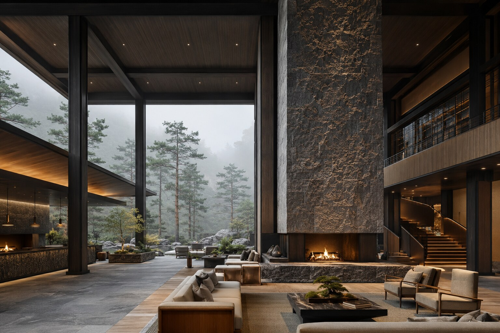
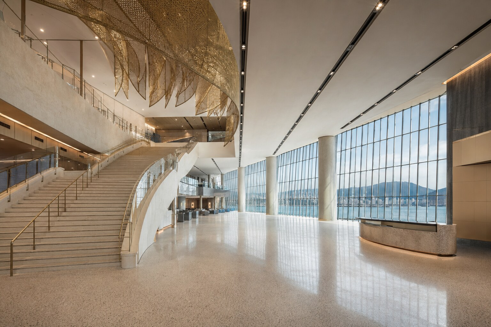

SELECTED HOSPITALITY / 05
설악 포레스트 리트리트SEORAK FOREST RETREAT
숲과 화강석, 짙은 목재의 깊이를 담은 대규모 마운틴 리조트.
VIEW PROJECT05PROJECT OVERVIEW
숲의 시간을 건축 안으로 들이다.
현지 화강석의 거친 표면과 짙은 삼나무 구조, 낮은 색온도의 빛을 일관되게 사용했습니다. 도착 정원과 거대한 벽난로 로비, 다이닝과 스파, 객실 테라스가 안개 낀 소나무 숲을 향해 차분히 열립니다.
PROJECT GALLERY
공간의 장면들
